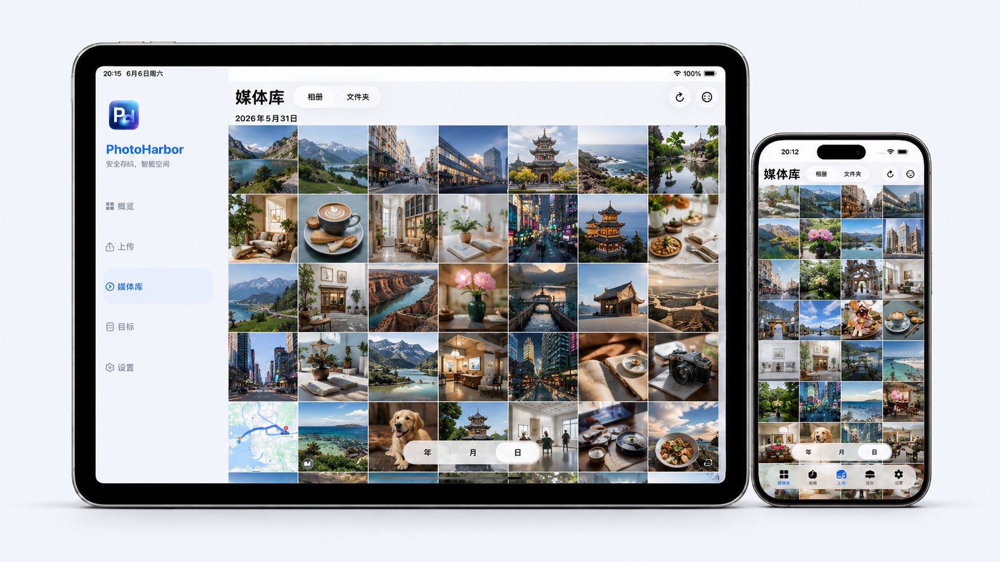

PhotoHarbor
把 iPhone 照片，带回你自己的存储
把照片和视频归档到 NAS、Mac / Windows 共享文件夹或云盘，在一个私人媒体库里继续浏览、播放、分享和恢复。需要腾空间时，再安心处理本机副本。

归档
浏览
播放
恢复
释放空间
01
选好照片，归档交给后台。
选好照片和存放位置后，PhotoHarbor 会把归档任务放到后台有序完成。你可以随时查看整体进度、当前状态，并在需要时暂停或继续。
后台归档
进度清楚
暂停后继续

02
自己的照片库，也可以熟悉又好逛。
PhotoHarbor 会为远端照片建立可浏览的媒体库。按相册、文件夹、年、月、日找到回忆，也能在当前目录继续上传，不必在文件路径里来回寻找。

03
远端照片，也能像本地相册一样顺手。
PhotoHarbor 会自动生成并缓存远端媒体缩略图，也会优先获取支持的网盘和 NAS 已生成的小图，减少等待和原件读取。打开单张照片时，再按需呈现更清晰的预览；远端 Live Photo 也可按住动态预览，动态部分只在需要时从你的远端存储下载到本机缓存。
自动生成缩略图
复用服务端小图
Live Photo 动态预览

05
从分享菜单，直接存进自己的存储。
在照片、文件或其他支持系统分享的 App 中选中图片和视频，选择 PhotoHarbor，再指定远程连接与文件夹。无需先保存到 iPhone，就能把内容直接上传到自己的 NAS、共享文件夹或云盘。
系统分享入口
选择远端文件夹
直接完成保存

06
你的存储，不必只有一种。
家里的 NAS、Mac / Windows 共享文件夹，或常用云盘，都可以成为 PhotoHarbor 的归档目标。你只需要在一个入口里选择照片要去哪里。
SMBNAS 与 Mac / Windows 共享文件夹
WebDAV自建与第三方存储
SFTP密码或私钥连接
Google Drive用户授权的云端目录
Dropbox用户授权的云端目录
OneDrive用户授权的云端目录
百度网盘用户授权的云端目录
PhotoHarbor 支持直接读取 QNAP、群晖和飞牛 NAS 的原生缩略图，加快远端媒体库加载；同时通过通用预览能力，为不同存储目标提供连贯一致的浏览体验。
我们也会持续扩展更多协议和网盘支持，让更多用户可以把已有存储接入同一个私人媒体库。
07
需要腾空间时，再确认删除。
完成归档证明的项目才会进入 Safe Delete。你可以查看阻断原因、按需再次校验，并在最后一步亲自确认。PhotoHarbor 不会自动删除本机照片。
了解安全释放空间
PhotoHarbor
少操心一点，照片更从容一点。
上传更稳、网络更省心、隐私更安全、远端浏览更顺畅。